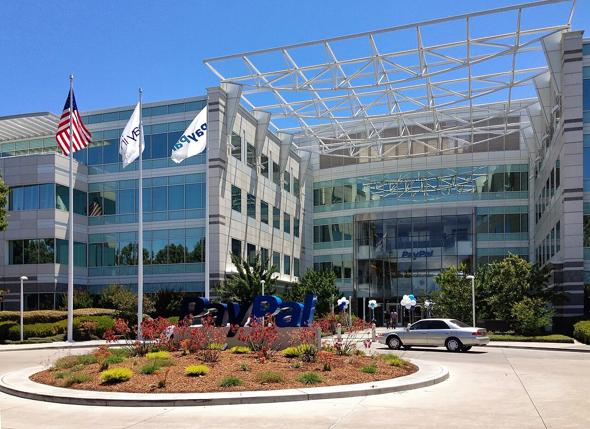

PayPal revenue rose 2% to $8.6 billion in the third quarter as net income fell 14%


PayPal's revenue grew 2.0% to $8.6 billion in the third quarter of 2026, compared with the third quarter of 2025. Costs grew faster than revenue, so operating income fell 7.8% to $1.4 billion and net income fell 14.0% to $1.1 billion. Share buybacks lowered the diluted share count by 10.6% over the year, so earnings per share fell less, by 3.8%.
Revenue grew slowly
Revenue of $8.6 billion was 2.0% above the third quarter of 2025. That is slower than the 4.8% growth in the second quarter and the 7.2% growth in the first. For the first nine months, revenue was $25.6 billion, up 4.6%.
In its earnings release, PayPal said total payment volume increased 6% to $487.1 billion. The 10-Q says transaction revenue grew less than payment volume because of changes in product and geographic mix, higher co-marketing campaigns and incentives with large merchants, and lower foreign exchange fee revenue. Revenue from other value added services fell in the quarter, which the company attributed to lower interest earned on assets behind customer balances, partly offset by more interest and fee revenue from its loans receivable.
Costs rose faster than revenue
Operating costs, which are revenue minus operating income, were $7.2 billion, up 4.1% on a year earlier. Operating margin was 16.3%, against 18.1% a year earlier. Net margin was 12.5%, against 14.8%.
The 10-Q says the company began a restructuring plan in the third quarter to remove organizational layers. The charges for that plan were $152 million in the quarter. The effective tax rate was 21.9%, against 18.6% a year earlier. Net income for the first nine months was $3.3 billion, down 13.3%.
Cash flow and buybacks
Cash from operations was $1.6 billion, down 19.4%. Capital spending was $161 million, so free cash flow was $1.4 billion, or 16.7% of revenue, against 20.4% a year earlier.
PayPal spent $1.5 billion on buybacks in the quarter and $118 million on dividends. Over nine months the two came to $4.9 billion, or 120% of free cash flow for the period. At September 30, cash and short-term investments were $10.3 billion and total debt was $13.5 billion.
Twelve quarters of figures
Free cash flow is cash from operations minus additions to property and equipment, and differs from the company's own non-GAAP free cash flow measures. Total debt is the balance sheet's long-term debt plus its current debt line.
Sources: Form 10-Q (SEC EDGAR) · Form 10-Q filing index · EDGAR company facts for PayPal · PayPal third-quarter 2026 earnings release (Exhibit 99.1). More figures for PayPal are on its company page.